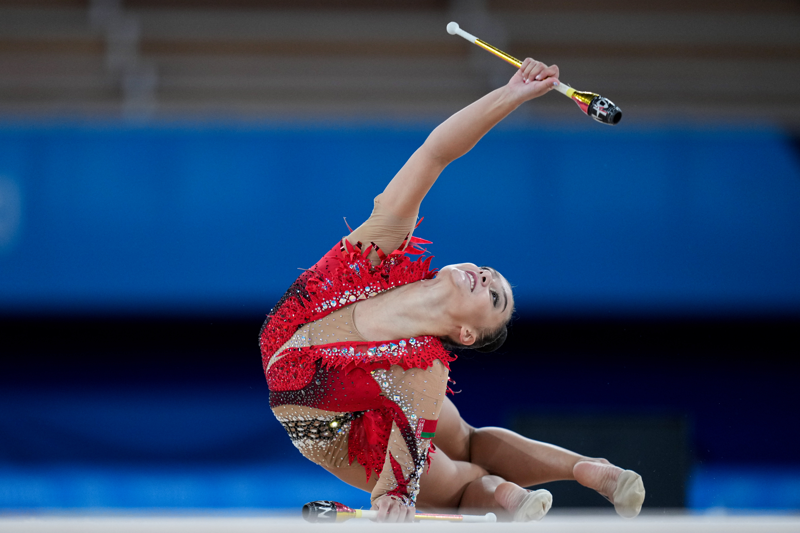
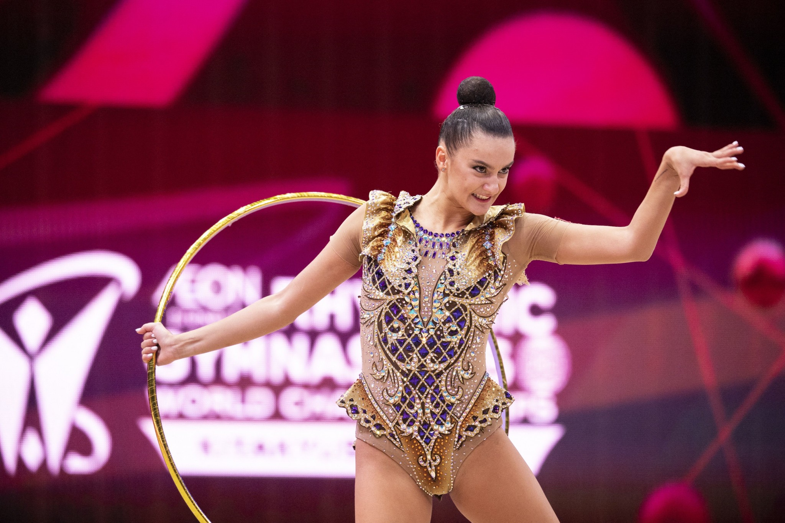
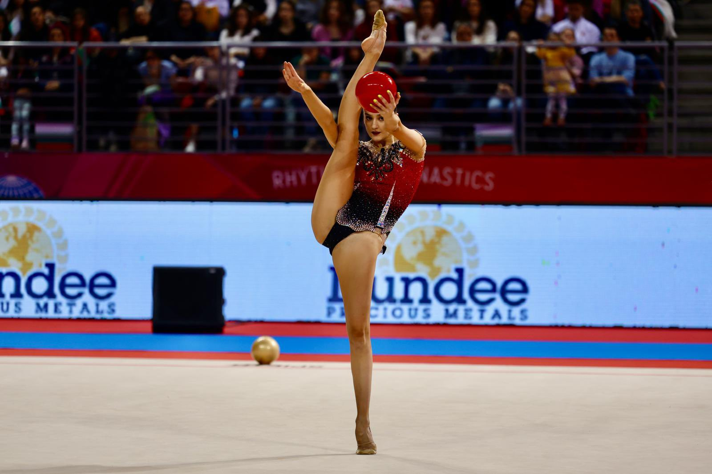
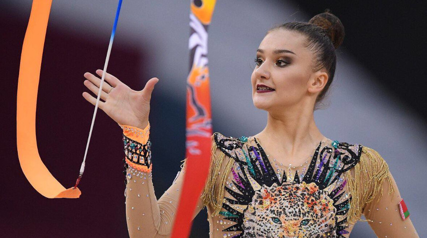
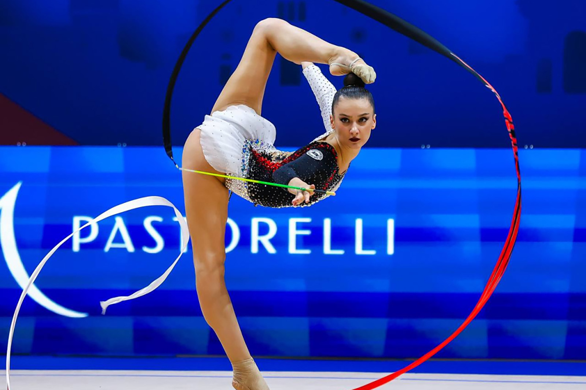
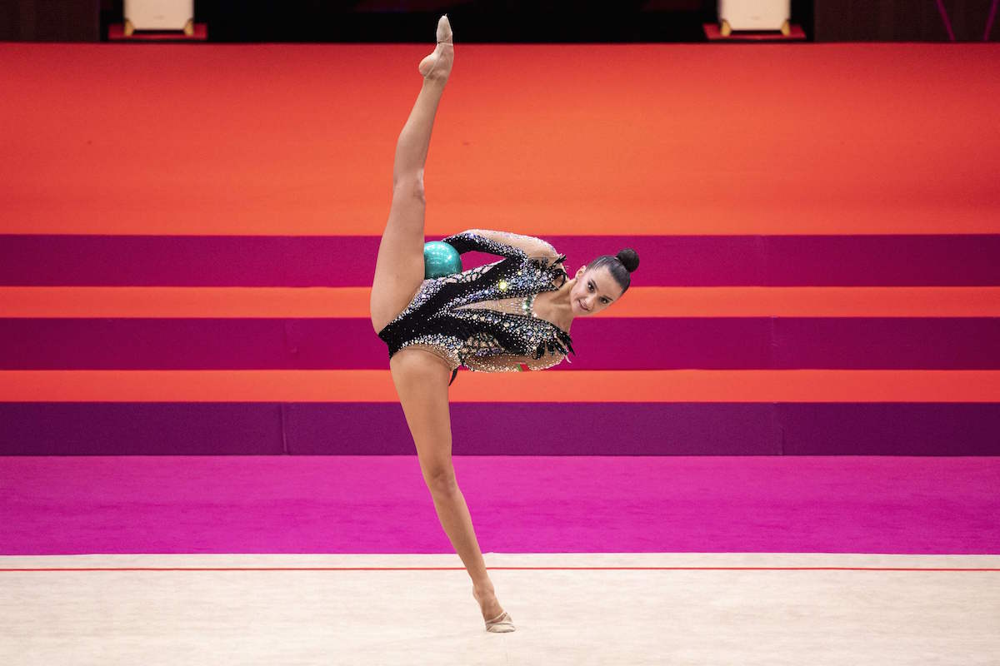
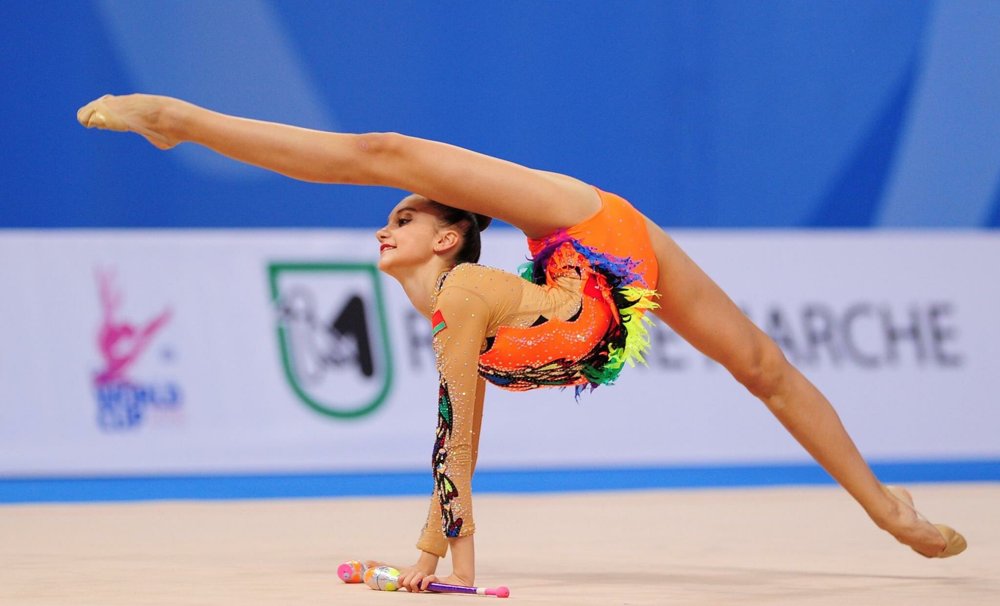

HARNASKO Alina (BLR) during the Olympic Games Tokyo 2020, Rhythmic Gymnastics Individual All-Around Final Clubs on August 7, 2021 at Ariake Gymnastics Centre in Tokyo, Japan.
Pesaro, Italy. 30th May, 2021. Belarus Alina Harnasko during the FIG Rhythmic Gymnastics World Cup 2021, Individual Final Hoop at Vitrifrigo Arena in Pesaro, Italy, May 30, 2021.
Alina Harnasko winning silver in the finals of the ball exercises at the Rhythmic Gymnastics World Cup in Sofia, Bulgaria with a score of 28.350 points.
Belarusian Harnasko wins Ribbon event at RG World Cup in Greece.
Alina Harnasko performing at the 2024 Sofia World Cup with the Ribbon apparatus.
HARNASKO Alina (BLR) during the Olympic Games Tokyo 2020, Rhythmic Gymnastics Individual All-Around Final Ball on August 7, 2021 at Ariake Gymnastics Centre in Tokyo, Japan - Photo Kanami Yoshimura / Photo Kishimoto. 
HARNASKO Alina (BLR) - 2017 Rhythmic Worlds, Pesaro (ITA) - Qualifications Clubs. Harnasko wins three individual events at Rhythmic Gymnastics Grand Prix in Tartu.